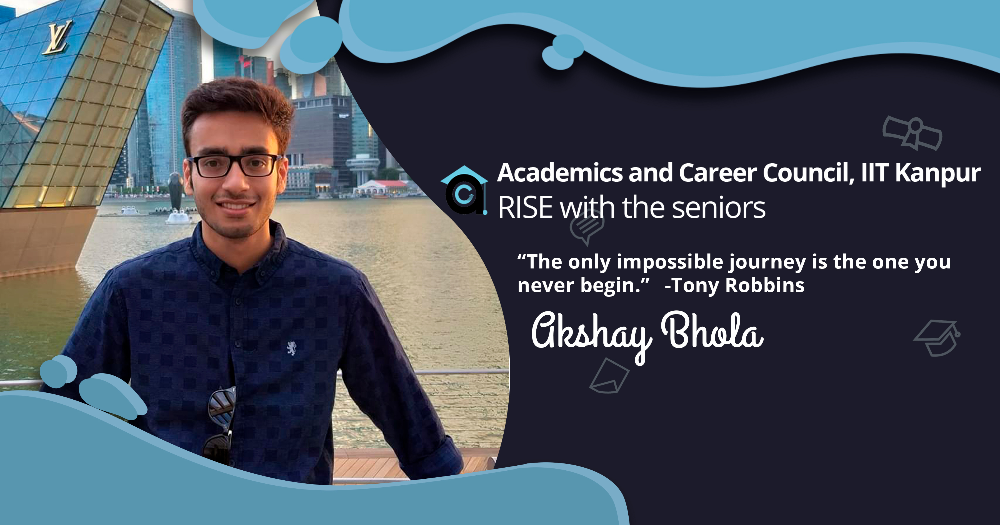
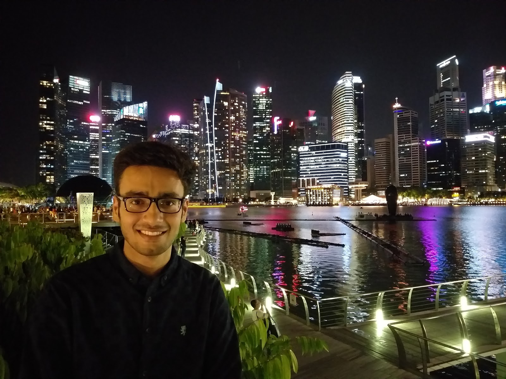
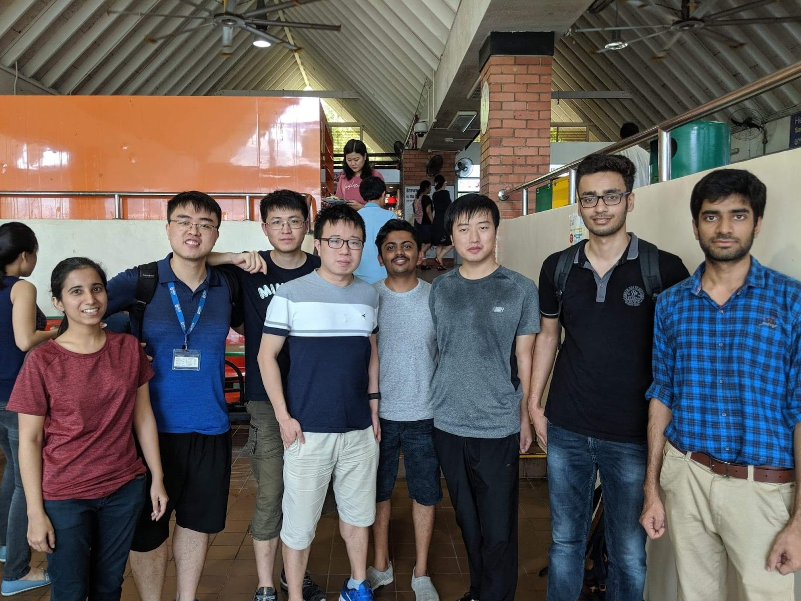
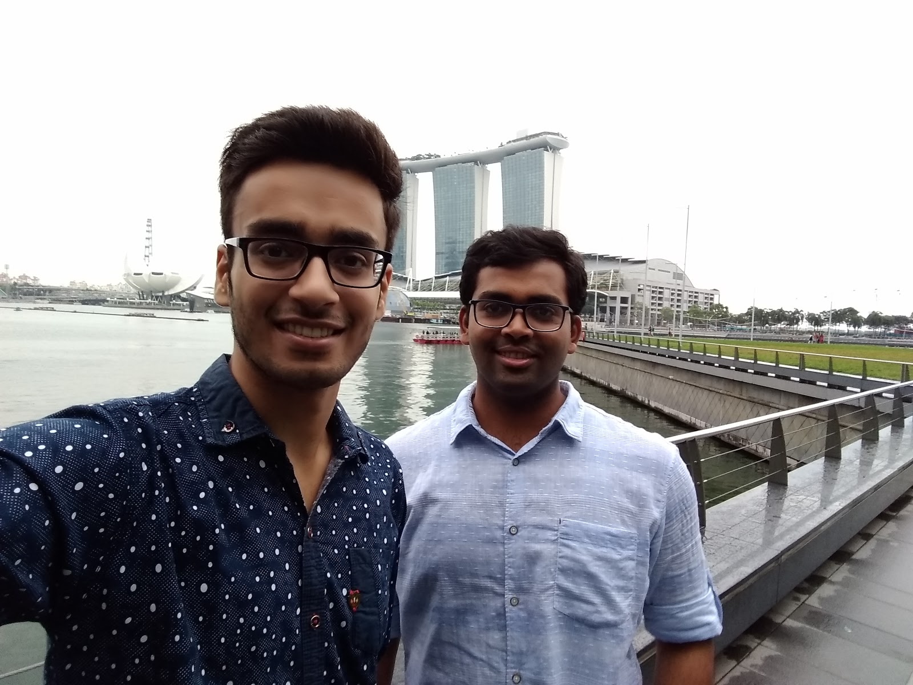
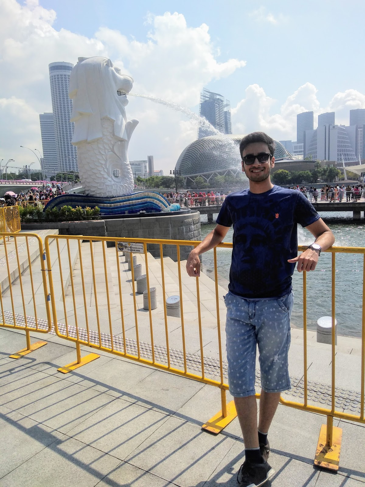

Journey to the Garden City | Akshay Bhola
April 26, 2020
The penultimate year is quite a crucial period of our stay at IIT Kanpur. Amid the academic and extracurricular commitments, you have to plan the undertakings for the upcoming summers. The idea of going to a new city to explore corporate life or getting a taste of research at a foriegn University is exciting but later on, it might get overwhelming over the multitude of available choices -- whether to choose an academic or corporate intern, should I target simply the core profiles or keep the non-core profiles in the picture too. I remember living this scenario at the end of 4th semester, having little clue of the internship process, wondering how to proceed. What I have seen is that it is the case for most of us at some stage. It happens to be the first time you would be joining the corporate world or flying overseas to experience another reality altogether.
In a nutshell, I am pursuing Double Major in Computer Science and Mechanical Engineering with a Minor in Cognitive Science. I am involved in research in the areas of Machine Learning, particularly Computer Vision and Natural Language Processing. .

When targeting a foriegn internship, one of the easy and more organized ways is to apply for internship opportunities sent by OIR. They usually ask for a SOP, CV and the selection is mainly based on CPI. Another option is to apply for programs being offered by different countries -- DAAD Germany, MITACS Canada etc. These are well funded programs. Most of these programs are for 3rd year students and thus were out of the picture for me. Apart from these programs, the third option is getting an internship via applying, which I opted for.

During the winter break of 2018, I was working on a research project and started planning the proceedings on the internship process. From the previous semester, I started focusing on building my ML profile and was aiming to add a research project by winters. In the beginning of January, I completed the project and started writing emails to Profs. It was a late start on my side, usually people start looking for Profs around October - November. It is better to start applying early on when Profs are less occupied with PhD applications.
Moving on to the application process for applying: After having the picture of a research intern in mind, there are still a number of aspects to look for -- University, Prof., labs. It is also quite common to have a blurry image of the fields that one would work on. This is something that one shouldn’t choose simply based on someone else’s advice. It is helpful to ask seniors about their areas of interest, why they are working in that area and why not in some other. Ultimately, it is up to you to explore and to narrow down the areas that you find interesting and are actually passionate about. Clarifying this makes the process ahead more streamlined. Next step is deciding the Profs and particularly, this was the most tedious one for me. Considering the broad set of available options, it made the process overwhelming.

I started by contacting peers and seniors, who have been through this process and getting suggestions on the Profs that might be willing to take interns. It is usually the case that some Profs are more inclined towards taking foriegn interns than others. These suggestions provided a more handy set of options to proceed with. Additionally, I started exploring the profile of Profs and enlisting the suitable ones. This search might get random but there are some useful aspects to look for. Sometimes Profs mention it on their websites explicitly that they are open to visiting students. Also there are university rankings available (QS ranking, csranking.org) to prioritize your search.
Honestly, the emailing part of the application gets really tiresome over time. Over dozens of mails I sent, I received a fraction of replies. Most of the turndowns I received were because Profs are less inclined towards spending their resources on a 3 month intern. They usually look for students who are willing to stay for at least 6 months. To get over this disadvantage, another option some people go for is that they make their own financial arrangements for the internship. This option is considerable, especially if you are planning for higher studies. Later on, having worked with a renowned Professor and getting a recommendation from them does add weight to your application. .
Now talking about the interview process, it was a small spot of bother compared to the application process. It was a simple technical interview about the basics of Machine Learning and NLP. That went well and following that, I had to work on an assignment, involving Strategic Analysis over the assigned topic. Again, simpler than the taxing applying process. Successfully completing the task, I got the invitation letter for a funded internship at National University of Singapore and with that, I was done with the internship process.

In the beginning of May, I started my internship at NUS. The first day in the mesmerizing city and travelling from the Airport to the Condo, I realised and witnessed in person why it was called the “Garden City”. The whole city looks like it has been built inside a park. Walking around the city on the first day, the most unusual thing I found was the food courts. There are shops lined up, each one selling a set of items from a different country -- Korean, Chinese, Thai, Japanese. Almost all shops sold only non-veg food and a lot of which were sea-food. Being vegetarian for some time, that was a bit of trouble initially. Even the one Indian shop that I found had a similar scene.
Moving onto the internship, I was involved in building NLP based models for the Job Recommendation System. The Professor that I was working with was a pundit of their field and a really helpful person. Also, the group I was involved with consisted of ingenious post-graduate students having real insight of the field. The work environment was quite open -- flexible work time and no compulsion to sit in the lab. I used to sit in the open lounges and work remotely on campus. There were regular group meetings where everyone presented their work and received feedback from the group. Being part of that environment and experiencing the collaborative working of the group provided the much needed insight that helped me in clearing up the dilemma that I had on deciding to choose the option of higher studies.

Apart from NUS, the city had too much to offer. Being in a place like Singapore during summer vacations have made the vacations memorable. During that time, I was staying with a friend from IIT Kanpur. During weekends, we used to travel throughout the day -- walking around the Downtown region, hitting different food places (being a foodie), and getting a view of sunset in the Bay area. Another benefit of being in a country like Singapore was its nightlife, especially for those having college in a city like Kanpur :P. Luckily, one of the chapu seniors was also working in Singapore during that time. We went to a number of parties during weekends. Boy, those were the memorable days. Still remember sitting in the cab at 4 AM, going back to the condo after full on outing on Sunday (Saturday?).
I also managed to visit the neighboring countries; the Netherlands, Denmark, and
Czechia. The experience of visiting each country was unique, and I learnt many new
things and made numerous memories.
At the dusk of this beautiful experience, I presented my research work that I carried out for about 3 months. Even after my stay at Singapore, I continued the project remotely and completed it around October. On my last day at NUS, I submitted my NUS credentials back, sat in the campus shuttle bus and toured the campus one last time. That was the end of a memorable summer internship.
-Akshay Bhola
edited by Saksham Pruthi